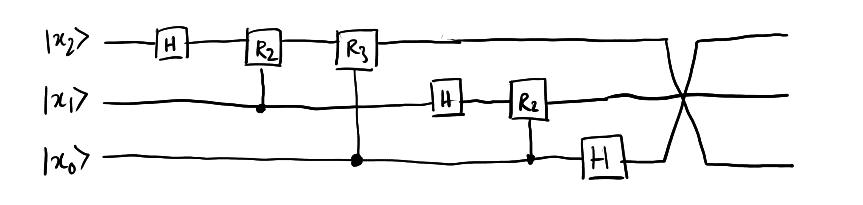
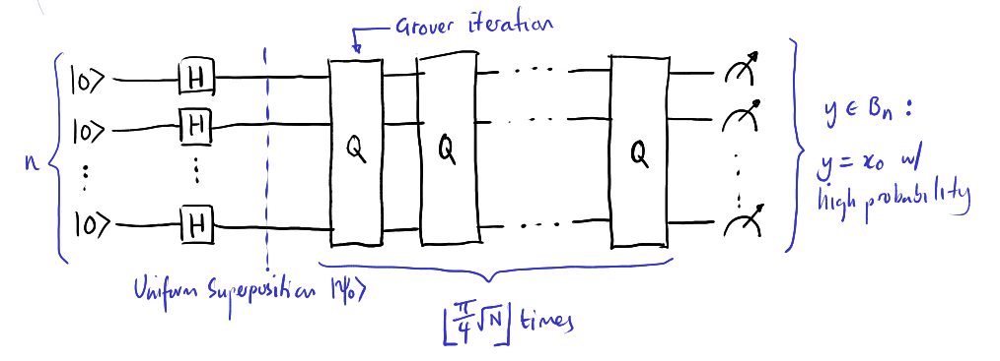
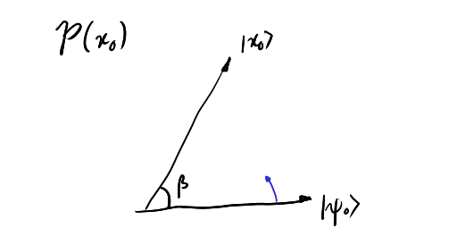
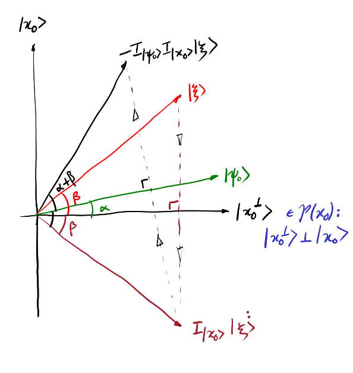
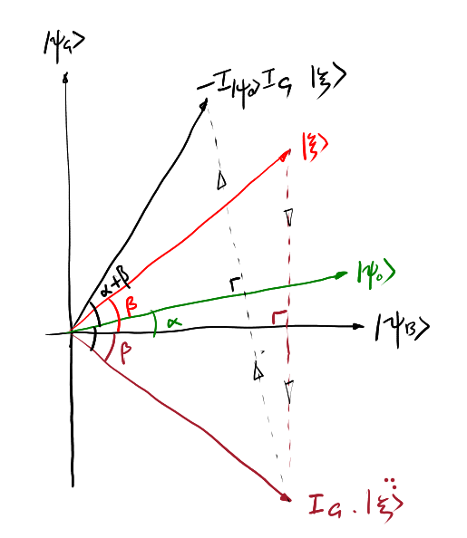

### Computations
Let bitstring set $B = B_1 = \\{0, 1\\}$ be single bit bitstrings.
- $B_n$ is then the set of all $n$-bit bitstrings, and $B^*$ is the set of all finite bitstrings.
***Computational Task.*** A computational task is:
- Given an **input** as a bit string $x = i_1 i_2 .. \in B_n$
- A language $L \subseteq B^*$
We want to solve
- Given $x \in B^*$, is $x \in L$?
And output
- 1 if true, 0 if not.
***Computational Model.***
There are many possible choices of model, e.g. circuit model, finite automata, etc.
But all have an important feature, they are
- A process with discrete steps
- Each step requires a fixed constant effort/resource to complete
The **circuit model** or gate array model is as follows:
For a given $x = i_1..i_n$, we extend by an arbitary extra number of zero bits, which is our *working space*
$$ \implies i_1 .. i_n 00 .. 0$$
The basis steps are a specified sequence of $\land, \lor, \lnot$ gates on specified bits.
Note that this set of classical gates is universal, i.e. any func $f: B_m \lra B_n$ can be constructed by a sequence of these gates. A **computation** is a prescribed sequence of steps for each input size $n$. The **output** is the value of some designated bits, after final step.
This is a **boolean circuit**.
A **randomised (probabilistic) classical computation**
Like a circuit gate model, but we initially extend input $x$ *in addition* by a sequence of random bits $r_1 .. r_k$
$$ \implies i_1 .. i_n 0 .. 0 r_1 .. r_k $$
So each time the circuit is run, the r bits are set uniformly at random, and the output is probabilistic.
Usually require output to be correct with a suitably high probability (over 0.5)
### Complexity
A consumption of resources as a function of n. We have $T(n)$ the number of computational steps (time), and $Sp(n)$ the amount of space taken (space). Usually we like to look at time.
The main question is does $T(n)$ grow polynomially or exponentially (super-poly) prop. to the size of the input.
Poly time calculations are called **tractable** or **feasible**.
***Class P.*** the set of all problems with poly-time deterministic algorithms.
***Class BPP.*** (Bounded error probabilistic poly time): the set of all probabilistic poly-time algorithms s.t. for all inputs $x$, the **probability of correctness $\geq \frac23$**.
Note that this class still holds for any probability $p \gt \frac12$ (bounded away from half)
These are all considered "efficient"
For BPP with any probability $\frac12 + \delta$ of success, we can repeat it $k$ times and take a majority vote. The **chernoff bound** says that in this case we would be correct with a $p \gt 1 - e^{-2\delta^2 k}$.
We can always scale K up, and since K is a constant and BPP requires poly time algorithms, this is still poly time.
***Example.*** Prime testing.
IN: Integer N in binary
SIZE: $n = \left\lceil{\log_2 N }\right\rceil $
Naive algorithm: test and divide by all numbers $2..\sqrt{N}$. This is not poly-time, as it takes at most $\sqrt{N} \approx 2^{\frac n 2}$ steps.
However, prime testing is proven to be BPP, and finally P in 2004.
### Quantum Computation
We will focus on the circuit model.
For input $x = i_1 .. i_n \in B_n$, we start with qbits $\e{i_1}..\e{i_n}\0..\0$ similar to classical.
Computational steps are 1 or 2 qbit gates designated on qbits.
- Single qbit gates include: $H, X, Z, P(\phi), \dots$ (last one is rotation)
- Double qbit gates include: $CX, CZ, \dots$
Output is a quantum measurement in $\\{\0, \1\\}$ basis only on specified qbits.
***Universal Gates.*** A program can be thought of as some fat unitary U over all bits. This has continuous parameters. Therefore, there are **no finite set** of gates that can be exactly universal.
We can think about *approximate universality*,
***Def.*** $G$ is **approximately universal** if
- $\forall \varepsilon \gt 0$, unitary $W$ on $n$ qbits:
- There exists a circuit $\tilde W$ if gates in $G$ such that
$$
\lVert W - \tilde W \rVert \lt \epsilon
$$
Where $\lVert A \rVert$ is the max over all normalised $\e\psi$ of $\lVert A\e\psi \rVert$ (the spectral norm).
i.e. the maximum distance an approximate gate set program can take you from the actual result is an error $\varepsilon$.
The size of $\tilde w$ is expressed generally in number of bits $n$.
***Thm.*** (Solway-Kitaer for dependence on accuracy).
For each fixed $n$, there is a polynomial $p$ s.t. $\forall W$ on $n$ qbits,
the size of the circuit $\tilde W$ is bounded by $p(\log \frac{1}{\varepsilon})$. Polynomial in number of digits of accuracy
***Fact.*** $G = \\{CX, \rm{all 1 bit gates}\\}$ is **exactly** universal, but there are infinite 1 bit gates.
$G' = \\{H, CX, P(\frac \pi 4)\\}$ is an approximately universal set.
***Def. Class BQP* (Bounded error quantum poly-time)** All problems that can be solved with a poly-sized quantum circuit having probability of correctness $\gt \frac 2 3$ (or anything above 1/2).
These problems are feasible quantumly.
Note that
- BQP is independent of choice of approximately universal gate set
- $BPP \subseteq BQP$ but we do not know if $BPP \neq BQP$.
***Reversible Boolean Functions.*** For any function $f : B_m \lra B_n$ which maps boolean values $x \mapsto y$.
In general, boolean functions are not usually reversible. AND is an example of this. Quantum unitaries however are always reversible.
Consider then a $\tilde f : B_{m+n} \lra B_{m+n}$ which does
$$\tilde f : (x, y) \mapsto (x, y \oplus f(x)) $$
Which can easily be constructed from $f$. $\oplus$ is still bitwise addition mod 2.
***Lemma.*** $\tilde f$ is always reversible.
***Proof.*** Note $x \oplus x = 0 \forall x$. Therefore
$$ \tilde f(\tilde f(x, y)) = (x, y \oplus f(x) \oplus f(x)) = (x, y) $$
Hence $\tilde f$ is always reversible and is its own inverse.
Now if $g: B_k \lra B_k$ is any invertible boolaen function, let the linear map on $k$ qbits defined on the $k$-basis be
$$
A_g : \e{x} \lra \e{g(x)}
$$
For a unitary $A_g$.
For a function $f$ that can be made into a reversible function $\tilde f$, we write $A_{\tilde f} \equiv U_f$, so
$$ U_f \e{x}\e{y} = \e{x} \e{y \oplus f(x)} $$
***Computation by quantum parallelism.*** Let
$$
\e{x} \e{0..0} \overset{U_f}{\lra} \e{x} \e{f(x)}
$$
By linaerity of the operation, also get
$$
\left(\frac{1}{\sqrt{2^m}}\sum\limits_{\forall x} \e{x}\right) \e{0..0} \overset{U_f}{\lra} \frac{1}{\sqrt{2^m}}\sum\limits_{\forall x} \e{x} \e{f(x)}
$$
Let this be written as $\e{f}$, and is basically $f$ calculated over a superposition of all possible input bit strings $x$.
Therefore **one** run of $U_f$ gives a state of all exponentially many values of $f(x)$.
Furthermore, although $\e\psi = \frac{1}{\sqrt{2^m}}\sum\limits_{forall x} \e{x}$ has exponentially many terms, it can be prepared easily by using only *linear* effort.
- By using $m$ hadamard gates
$$ \e{0..0} \overset{H \tens H \tens \cdots \tens H}{\lra} \frac{1}{\sqrt{2^m}}(\0 + \1) \cdots (\0 + \1) = \e\psi $$
### Promise Problems
Instead of the input $x$ being a binary string (or quantum binary string), we have
- $x$ is a given black box / **oracle** $O_f$, that computes some boolean function $f : B_m \lra B_n$.
- Each use of the oracle counts as 1 computational step
- And we can be given an *a-priori* **promise** about a property of $f$.
The problem is:
- Given $x$, we want to determine some property of $f$ (given our promise)
- We can only access $f$ via the oracle $O_f$
- Computation starts on a string of zeros (or quantum $\0 .. \0$)
**Query Complexity.** Number of times $O_f$ needs to be queried to solve the problem.
**Total time complexity.** Total size of circuit (oracle = 1 gate)
***Example.*** Balanced versus Constant.
INPUT: A oracle for $f: B_n \lra B_1 \pod{\equiv B}$
PROMISE: $f$ is either (a) **constant**, or (b) **balanced**
- Balanced: half the inputs result in 1, the other half 0
PROBLEM: Determine if $f$ is constant or balanced with *perfect certainty*.
***Classically.*** $\frac{2^n}{2} + 1$ queries are necessary and sufficient to solve with certainty.
*Sufficiency.* we need to measure over half of inputs to determine for certain if it is balanced or not.
*Necessity.* Suppose we have a deterministic classical algorithm. Assume for contradiction that it claims to solve the problem for any $f$ using $K \leq \frac{2^n}{2}$ queries.
An adversary can engineer a function that: when run with this algorithm, always returns 0. However, the function itself is not fully defined.
- Since *less than half* of inputs are run, if the algorithm says balanced we can then define all the unmeasured inputs to be 0, and if constant, we can define half of all inputs (we have more than half "undiscovered") as 1.
***Quantumly.*** We claim that **one** query is sufficient.
- Start with $U_f \e{x}\e{y} = \e{x} \e{y \oplus f(x)} $
- We use a method of "phase kickback" to encode values of $f$ in the phase/amplitudes.
**Important:** Our working space $\e{y} := \e-$ needs first to be set to the minus state.
Then, note that
\begin{align}
\e{x} \e- &= \e{x} \frac{1}{\sqrt 2} (\0 - \1) \\\\
&\overset{U_f}{\lra} \e{x} \frac{1}{\sqrt 2} (\e{f(x)} - \e{1 \oplus f(x)}) \\\\
&= \begin{cases}
e{x}\left(\frac{\0 - \1}{\sqrt{2}}\right) & \rm{if } f(x) = 0 \\\\
\e{x}\left(\frac{\1 - \0}{\sqrt{2}}\right) & f(x) = 1
\end{cases} \\\\
&= (-1)^{f(x)} \e{x} \e-
\end{align}
And so now we have the result of $f$ as either a + or - amplitude -- this is phase kickback and is a very important trick.
Now, as a superposition of all $x$s, this becomes
$$
\frac{1}{\sqrt{2}^n} \sum\limits_{\forall x} \e{x} \m \overset{U_f}{\lra} \left(\frac{1}{\sqrt{2^n}}\sum\limits_{\forall x} (-1)^{f(x)} \e{x}\right)\m
$$
We can now discard the second state, and now have our phase-encoded query:
$$
\frac{1}{\sqrt{2^n}}\sum\limits_{\forall x} (-1)^{f(x)} \e{x}
$$
- If $f$ is constant, then all the signs are the **same**.
- If $f$ is balanced, **exactly half** the signs will be different.
i.e. $\e{\xi_{f_{const}}} \perp \e{\xi_{f_{balanced}}}$, therefore they are perfectly distinguishable. However, they are not in the basis $\0, \1$, and we only allow measurement in that basis, and so we must convert it back.
Since we applied H gates to get to this rotated state, we can apply all H gates again to rotate back (H is self inverse):
$$
\e{\eta_f} = H \tens \cdots \tens H\e{\xi_f}
$$
Unitaries preserve dot product $\implies \e{\eta_{f_{const}}} \perp \e{\eta_{f_{balanced}}}$ still holds.
- When $f$ is constant, $\e{\eta_f} = \pm \e{0 \cdots 0}$. When measured, this gives 0...0 with **certainty**.
- When $f$ is balanced $\e{\eta_f} = \sum\limits_{\forall x \in B_n}^{x \neq 0} a_x \e{x}$ for some coefficients $a_x$. When measured, this gives **some** bitstring $B_n$, which will never be 0.
A circuit is shown.

It takes 1 query and $O(n)$ processing.
Some observations:
- We cannot prove that there is a quantum algorithm that can answer a decision problem for any $f:B_n \lra B_1$ problem using polynomial oracle queries.
- SAT is a problem that cannot be solved. It can be worded as: given a $f: B_n \lra B_1$ with *no* promise, is there an $x : f(x) = 1$?
- Rather it is proved that *any* algorithm solving SAT with $p = 1-\varepsilon \pod{\varepsilon > 0}$ probability needs at least $O(\sqrt{2^n})$ queries.
- I.e. no promise = bad.
- If we can tolerate error in the above problem (success rate $p = 1-\varepsilon \pod{\varepsilon \geq 0}$) then we can design a randomised algorithm with a constant $O(\log \frac{1}{\varepsilon})$ queries, which removes the advantage of quantum.
- The classical alg is just: (a) choose $k$ values of $x = x_1 .. x_n$ uniformly at random, and execute $f$ on each $x$ ($k$ queries). (b) if any queries are different then balanced, else constant.
- If $f$ is constant, the answer is correct with $p=1$, but if balanced, the probability of all zeros or ones is $\frac{2}{2^k}$ and just increase $k$ until this is suitably small.
So this may lead one to claim that quantum algorithms are no more powerful than classical randomised ones (like NFAs being no more powerful than DFAs), but the below shows differently:
***Simon's Problem.***
Given an oracle $f : B_n \lra B_n$
And a promise that $f$ is either
- one-to-one
- two-to-one or **periodic**: there is some bitstring $\xi \in B_n : f(x \oplus \xi) = f(x) \pod{\forall x}$.
Determine which one it is.
> This is a follow-on from DJ algorithm, and this builds into prime factoring algorithms.
So far we only look at oracle problems - often though we would like to do standard, more general comptational tasks, that are not in oracle form. However of this type none so far have been found to be better quantumly.
Quantum Fourier Transforms
### Periodicity
***Def.*** A **Quantum Fourier Transform mod N** $QFT_{N}$
Takes an N-dimensional state space basis $\0, \1, \cdots, \e{N} :\in \bb{Z}\_N$, and transforms it by
$$
QFT : \e{a} \mapsto \frac{ 1 }{ \sqrt{N} } \sum\_{b=0}^{N-1} e^{\frac{ 2 \pi i a b }{ N }} \e{b}
$$
Can be written in the matrix form where each index element $[\cdot]\_{ab}$ is
$$
[QFT]\_{ab} = \frac{ 1 }{ \sqrt{N} } \omega ^{ab} \pod{\omega = e^{\frac{ 2\pi i }{ N }}}
$$
Then the matrix $\sqrt{N} QFT$ is
- Symmetrical
- Has 1s in its first row and column
- Each row and column is a **geometric sequence** $1, r, r^2, \dots$ where $r = \omega^k$ for the $k$th row/column.
- Is **unitary** Proof is left as an exercise to the reader
Note that $QFT_2$ happens to literally just be the hadamar gate.
*However* over higher dimensions $QFT_N$ is not just composed hadamars, the latter is often called a *boolean transformation*.
***Periodicity Problem.***
Carrying on from Simon's problem,
INPUT: $f : \bb{Z}_N \lra \bb{Z}_M$ as an oracle
PROMISE: $f$ is periodic
- $f(x + r \mod N) = f(x)$ for the smallest some $r$, the **period** in $f$.
- Note that $r$ divides N $\therefore N = Ar$ for some integer A the number of periods.
PROMISE 2: $f$ is one-to-one within each period
PROBLEM: Find $r$ with any constant probability $1 - \varepsilon$.
***Fact.*** Classically, $O(\sqrt N)$ queries are necessary and sufficient.
However quantumly, only $O(\log \log N)$ queries and $O(\poly(\log N))$ total processing time is required.
We can also reduce the problem of finding a factor of an integer to this periodicity problem.
***Quantum Algorithm for Periodicity Determination.***
We have a quantum oracle for $f: \bb Z_N \lra \bb Z_M$. Therefore
$$
U_f \e{x} \e{y} = \e x \e{y + f(x) \mod M}
$$
【1】Generate superpositions by some method, e.g. $QFT_N \e{\mathbf{0}}$
$$
\frac{1}{\sqrt{N}} \sum\limits_{x=0}^{N-1} \e{x}
$$
【2】We use one query to get
$$
\e{f} := \frac{1}{\sqrt{N}}\sum\limits_{\forall x} \e{x}\e{f(x)}
$$
Since $N = Ar$,
【3】Measure the second register in the $\0, \1, \cdots, \e{N-1}$ basis. We see some value $y = f(x_0)$ with $x_0$ being the smallest value such that $f(x_0) = y$.
So there are one such $x_0$ in each period, and in total
$$
x_0, x_0 + r, x_0 + 2r, \cdots, x_0 + (A-1)r
$$
After measurement, first register collapses to
$$
\e\per := \frac{1}{\sqrt{A}}\sum\limits_{j=0}^{A-1} \e{x_0 + jr}
$$
> *Note.* that $x_0$ is uniformly random from $0..r-1$. All function values occur equally often.
>
> If we measure $\e\per$, we will get a random $j : x_0 + jr$.
> - Therefore we get a random $x_0$ from a random period $j$.
> - And a uniformly random $x$, which is not helpful.
>
> **But** if we apply QFT first:
【4】We get
$$
\begin{align*}
QFT \e{\per} &= \frac{1}{\sqrt{N}} \frac{1}{\sqrt{A}} \sum\limits_{j=0}^{A-1} \sum\limits_{y=0}^{N-1} \omega^{(x_0 + jr )y} \e{y}\\\\
&= \frac{1}{\sqrt{NA}} \sum\limits_{y=1}^{N-1} \omega^{x_0 y} \left(\sum\limits_{j=0}^{A-1} \omega^{jyr}\right)\e{y}
\end{align*}
$$
Where the big bracket with the sum inside is a geometric series $1 + \alpha + \cdots + \alpha^{A-1}$ such that
$$
\alpha = \omega^{yr} = e^{\frac{2\pi i r y}{N}} = e^{(\frac{2 \pi i}{A})y} = 1 \\; \forall y
$$
if $y$ is a multiple of A, otherwise it will be the sum
$$
\frac{1 - \alpha^A}{1-\alpha} = 0
$$
Therefore $\alpha = 1 \iff y$ is a multiple of $A = \frac{N}{r}$.
Therefore
$$
QFT \e\per = \sqrt{\frac{A}{N}} \sum\limits_{k=0}^{r-1} \omega^{x_0 k(\frac{N}{r})} \e{k \frac{N}{r}}
$$
Where $\sqrt{A/N} = 1/\sqrt{r}$.
By magic we have encoded the random shift in the phase of the state, and so its amplitude is **independent** of $x_0$.
【5】We measure the label now, and obtain the result C, which is a multiple of $k_0 \frac{N}{r} \pod{0 \leq k_0 \leq r-1}$ uniformly at random. Therefore
$$
C = k_0 \frac{N}{r} \implies \frac{k_0}{r} =\frac{C}{N}
$$
Where $k_0$ is random, $r$ is unknown, C and N are known.
【6】(The number theory cop out part)
**If** $k_0$ is coprime to $r$, then trivially the way we get $r$ is simplify down $\frac{C}{N}$ and read off the denominator. If $k_0$ is not coprime to $r$, then we have no way of getting it. But, there is a non-negligible probability that $k_0$ is coprime, as:
***Theorem.*** The number of integers less than a $r$ that is coprime to it is at least $\Omega (\frac{1}{\log \log r})$.
Thus $P(k_0 \rm{ coprime to } r) \geq \Omega\left(\frac{1}{\log \log r}\right)\geq \Omega\left(\frac{1}{\log \log N}\right)$.
Therefore:
- When we simplify $\frac{C}{N}$ down, we get a $\tilde r$, our tentative $r$. We can check if this is indeed the period by checking if $f(0) = f(\tilde r)$.
- If so, we are done with 2 queries. Otherwise, **repeat the algorithm until we get lucky and our $k_0$ is indeed coprime with $r$**.
***Lemma.*** If an event has probability $p$ of succeeding, and the number of trials $M \geq \frac{\log 1/\varepsilon}{p}$, then the probability that at least one success happens in M trials is $1 - \varepsilon$.
***Proof.*** The probability of all trials failing is $(1-p)^M$. Want to see $(1-p)^M \leq \varepsilon$, which happens if and only if
$$
\begin{align*}
M \log (1-p) &\leq \log\varepsilon \\\\
M &\geq \frac{\log \frac{1}{\varepsilon}}{\log (\frac{1}{1-p})} \geq \frac{\log \frac{1}{\varepsilon}}{p} & \Box
\end{align*}
$$
***Note.*** To achieve 99% success, $O(p)$ repeats suffices. Thus repeating algorithm $O(\log \log N)$ times and checking $O(1)$ queries leads us to the $O(\log \log N)$ query complexity.
### Efficient Implementations
***Thm.*** QFT mod $2^n$ can be implemented by a small quantum circuit of size $O(n^2)$.
Recall that $QFT_{2^n} \e{x} = \frac{1}{\sqrt{2^n}} \sum_{y=0}^{2^n-1} \exp\left(\frac{2\pi i y x}{2^n}\right) \e{y}$. (Note we are using exp rather than e-to-the-power due to formatting)
***Key Fact.*** $QFT \e{x}$ is always a product state.
We first write $y$ in binary, i.e. $y = y_{n-1}2^{n-1} + y_{n-2}2^{n-2} + \cdots + y_0$. Then:
$$
\begin{align*}
\frac{xy}{2^n} &= y{n-1} \frac{x}{2} + y_{n-2} \frac{x}{2^2} + \cdots + y_n \frac{x}{2^n}\\\\
\therefore QFT \e{x} &= \frac{1}{\sqrt{2^n} } \sum\limits_{y_0}^{y_{n-1}} \exp\left(\frac{2\pi i x y}{2^n}\right) \e{y_{n-1}y_{n-2} .. y_0}\\\\
&= \frac{1}{\sqrt{2^n} } \sum\limits_{y_0..y_{n-1} = 0}^{1} \prod_{j=1}^n \exp\left(\frac{2\pi i y_{n-j}x}{2^j}\right)\e{y_{n-1}} \e{y_{n-2}}..\e{y_0}\\\\
&= \sum\limits_{y_0=0}^1 \sum\limits_{y_1 = 0}^1 \cdots \sum\limits_{y_{n-1} =0}^1 (\cdots) &(1)\\\\
&= \frac{1}{\sqrt{2^n}} \left(\sum\limits_{y_{n-1}=0}^1 \exp\left(\frac{2\pi i y_{n-1} x}{2}\right)\right) .. \left(\sum\limits_{y_0 =0}^1 \exp\left(\frac{2\pi i y_0 x}{2^n}\right)\right)\\\\
&= \bigotimes_{j=1}^n \left(\frac{\0 + e^{\frac{2\pi i x}{2^j}}\1}{\sqrt{2}}\right) &(2)
\end{align*}
$$
1. Each product depends only on one of the binary digits of $y$, i.e. only one sum. So we can separate the sums.
2. So we can see this is a product of 1 qubit states, which makes it efficient to compute.
Note that if x is binary, then we can write
$$
\exp\left(\frac{2\pi i x}{2^j}\right)= \exp(2\pi i [x_{n-1} x_{n-2} .. x_j \cdot x_{j-1} .. x_0]) = \exp(2 \pi i [0\cdot x_{j=1}..x_0])
$$
Where that centre dot · represents a *binary decimal point*, and we can discard any whole number above that fixed point since $e^{2\pi i}$ has a period of 1.
Thus $QFT \e{x_{n-1} x_{n-2} .. x_0}$
$$
= \frac{\0 + e^{2\pi i 0\cdot x_0}\1}{\sqrt{2}} \tens \frac{\0 + e^{2\pi i 0\cdot x_0 x_1}\1}{\sqrt{2}} \tens \cdots \tens \frac{\0 + e^{2\pi i 0\cdot x_{n-1}x_{n-2}..x_0}\1}{\sqrt{2}}
$$
This is the main key to a circuit for QFT.
For $n=1$, we note that $e^{2\pi i 0\cdot1} = e^{\pi i} = -1$, and so the QFT over 1 bit would end up being
$$
\frac{1}{\sqrt{2}} (\0 + e^{2\pi i 0\cdot1}\1) = \frac{1}{\sqrt{2}}(\0 - \1) = \frac{1}{\sqrt{2}}(\0 + (-1)^{x_0}\1)= H(x_0)
$$
Therefore a 1 qubit QFT is just a Hadamar gate.
For a higher number of $n$, we first introduce the one qubit **phase gates** $R_j$:
$$
R_j = \begin{bmatrix} 1 & 0 \\ 0 & e^{\frac{2\pi i}{2^j}} \end{bmatrix}
= \begin{bmatrix} 1 & 0 \\ 0 & e^{2\pi i 0\cdot0..01} \end{bmatrix}
$$
The controlled phase gate $CR_j$ over 2 qubits is defined as:
$$
\begin{matrix}
CR_j \0\e\psi = \0\e\psi & CR_j\1\e\psi = \1 R_j \e\psi
\end{matrix}
$$
This is diagrammatically represented the same as a CX gate.
We can observe what happens for $n=2$:
$$
QFT\e{x_1 x_0} = \frac{\0 + e^{2\pi i 0\cdot x_0} \1}{\sqrt{2}} \frac{\0 + e^{2\pi i 0\cdot x_1x_0}\1}{\sqrt{2}}
$$
Note that the first fraction is just $H\e{x_0}$. As for the second fraction:
$$
e^{2\pi i 0\cdot x_1x_0} = e^{2\pi i 0\cdot x_1} e^{2\pi i 0\cdot0x_0}
$$
Which is a $H$ and a Phase gate at the same time. And so the diagram would look something like:
QFT on 2 bits -- C-swap entails just swapping bits
And so going off this pattern, for $n=3 : QFT_8$:

QFT on 3 bits
Note that $QFT_{2^{k+1}}$ has $QFT_{2^k}$ as its subcircuit.
***Complexity.*** Each qubit uses at most $n$ gates, and one swap gate at the end. This gives us roughly $\frac12 n(n+1) = O(n^2)$ complexity.
Quantum Search
### Introduction
***Search.*** Search problems are about looking in a *state space* for a "good" item, or one of many "good" items, out of all possible items. We assume it is easy (efficient) to check *if* an item is good, but the state space may be large.
e.g. Boolean satisfiability / SAT is a classic search problem:
- **Given** a $\poly(n)$ size boolean formula $\phi : B_n \lra B_1$
- **Problem** Find or determine if there exists a satisfying assignment.
***NP.*** (Non deterministic polynomial time)
NP problems are problems that can be solved with a hypothetical non-deterministic computer in polynomial time.
Whenever this computer reaches a choice, it *simultaneously* branches into both possible paths and runs them in parallel, accepting any valid path. Thus after $k$ steps we can have $2^k$ paths in parallel.
Polynomial time here means that every path must accept or reject within polynomial number of steps.
We can give an NP algorithm for SAT for example, based on the simple principle:
- Given a boolean function $\phi(x_1..x_n)$
- This is satisfiable $\iff$ either $\phi(x_1..x_{n-1}, 0)$ is satisfiable or $\phi(x_1..x_{n-1}, 1)$ is satisfiable.
- Repeat recursively.
***Important:*** On NP vs quantum parallelism:
- In quantum, it is easy to access quantum "exponential branching", by using as input a superposition of all states (by repeated hadamards).
- We can use a single query $U_\phi$ to get a superposition of all outputs.
- **But** we cannot easily extract this information, and deduced whether or not $\phi$ is satisfiable.
### Unstructured Search
Structure in a search space makes searching easier. If we know a list is ordered, we can use binary search to get $n$ queries for $2^n$ items.
**Unstructured search** specifically means when we query a search space / database, we get **no information** about any other items.
Let us start by assuming a *unique* good item.
- **Given** unstructured database with $N = 2^n$ items, with a unique target item.
- **Problem** Find the good item with a high probability $1-\varepsilon$.
***Classically.*** We have to use linear search, giving a time complexity of $O(N) = O(2^n)$ being necessary and sufficient. If the good item is randomly placed, then $k$ queries give a probability of $\frac{k}{N}$ of success.
***Quantumly.*** We say that $O(\sqrt{N})$ queries are sufficient, and $\Omega(\sqrt{N})$ queries are necessary, via **grover's algorithm**.
> Note that here we only have a quadratic, and not exponential advantage.
We label items by $n$ bit strings, and so can represent queries by an oracle $f: B_n \lra B_1 : f(x) = 1 \iff x$ is the target.
- **Promise:** there is a *unique* $x_0 \in B_n : f(x_0) = 1$.
- **Problem:** Find $x_0$.
### Grover's Algorithm
Consider the circuit shown:

The Grover algorithm circuit. One Q is a "Grover query"
Initially, all possible states are in a superposition with amplitude $\frac{1}{\sqrt{N}}$, so there is only a $\frac{1}{\sqrt{N}}$ amplitude on $\e{x_0}$.
Every grover iteration Q moves roughly $\frac{1}{\sqrt{N}}$ more amplitude on to $\e{x_0}$ and takes away from everyone else.
***Def.*** (Reflections) Given any state $\e\alpha$, let
$$
I_{\e\alpha} = I - 2\e{\alpha}\b{\alpha}
$$
be the reflection in a "mirror hyperplane" orthogonal to $\e\alpha$. That is
- $I_{\e\alpha} \e\alpha = \e\alpha - Z\e\alpha \ip\alpha\alpha = -\alpha$
- $I_\e\alpha \e\beta$ where $\e\beta \perp \alpha = \beta - 2\alpha \ip\alpha\beta = \beta$
We can implement the reflection $I_{\e{x_0}}$ giving that $f(x_0) = 1$ is unique, by using one quantum query to $f$. We do this via phase kickback:
Using $U_f \e{x} \m = U_f \e{x} \left(\frac{\0 - \1}{\sqrt{2}}\right)$ gives us
$$
\begin{align*}
U_f \e x \m &= \e x (-1)^{f(x)}\m\\\\
\therefore U_f\e x \m &= \begin{cases} -\e{x}\m & x=x_0\\\\
\e{x}\m & x \neq x_0 \end{cases}\\\\
\implies U_f \e{x}\m &= I_{\e{x_0}} \e{x} \m
\end{align*}
$$
> This bypasses having to know $I_{\e{x_0}}$ as we can use the oracle to have the same effect.
***Def.*** (Grover iteration) $Q$.
$$
Q = -H_n I_\e{0^n} H_n I_\e{x_0}
$$
Where $H_n = \bigoplus_{i=1}^n H$ and $I_{\e{x_0}}$ is a query to the oracle.
***Algorithm.***
- Start with a uniform superposition $\e{\phi_0} = \frac{1}{\sqrt{2^n}} \sum\limits_{x \in B_n} \e{x}$
- Apply $Q \; k$ times where $k = \left\lfloor \frac{\pi \sqrt{N}}{4} \right \rfloor$ and measure all qubits.
Let $\space(x_0)$ be the real subspace generated by $\e{\phi_0}, \e{x_0}$ (the latter is unknown but useful for analysis).
We will show **(a)** In $\space(x_0)$, Q is the rotation through angle $2 \alpha : \sin\alpha = \frac{1}{\sqrt{N}}$.
Then **(a)** can show why Grover works:

$$\cos \beta = \ip{x_0}{\psi_0} = \frac{1}{\sqrt{N}}$$
The above is independent of $x_0$. We want to rotate $\e{\psi_0}$ until it sufficiently overlaps $\e{x_0}$.
How much do we rotate? Given **(a)** the rotation angle is $2 \sin^{-1} \frac{1}{\sqrt{N}}$, we want the number $k$ of $2\alpha$ rotations: $2\alpha k = \beta$.
$$
\begin{align*}
k\cdot 2\sin^{-1} \frac{1}{\sqrt{N}} &= \cos^{-1} \frac{1}{\sqrt{N}}\\\\
k &= \frac{\cos^{-1} \frac{1}{\sqrt{N}}}{2\sin^{-1} \frac{1}{\sqrt{N}}}
\end{align*}
$$
e.g. If $N=4$, then $k = \frac{\arccos \frac{1}{2}}{2\arcsin \frac{1}{2}} = \frac{2\pi}{3} / \frac{2\pi}{3} = 1$. I.e. one query is enough for $N=4$.
e.g. if N is large, then $\sin^{-1} \frac{1}{\sqrt{N}} \approx \frac{1}{\sqrt{N}}$, and $\cos^{-1}\frac{1}{\sqrt{N}} \approx \frac{\pi}{2}$ as the values are very close to zero. Therefore we would need
$$
k \approx \frac{\left(\frac{\pi}{2}\right)}{2\left(\frac{1}{\sqrt{N}}\right)} = \frac{\pi \sqrt{N}}{4}
$$
*Note* that the final state $\e{\psi_k} = Q^k \e{\psi_0}$, which forms an angle $O\left(\frac{1}{\sqrt{N}}\right)$ with $\e{x_0}$, and so the probability that we will measure $P(:\e{\psi_k} = x_0)$ is given by the born rule as
$$
|\ip{\psi_k}{x_0}|^2 = 1-O\left(\frac{1}{N}\right)
$$
Which is very close to one.
Of course it remains to prove **(a)**, which we will do in a collapsed block :)
***Proof.*** Recall that $Q = -H_n I_\e{0^n} H_n I_\e{x_0}$
For a unitary $U$:
$$
\begin{align*}
U I_{\e{\psi}} U^\dagger &= UIU^\dagger - 2U \e\psi \b\psi U^\dagger\\\\
&= I - 2(U\e\psi)(U\e\psi)^\dagger\\\\
&= I_{U\e\psi}
\end{align*}
$$
Since $H_n$ is a unitary, and $H_n^\dagger = H_n$, and $H_n \e{0^n} = \e{\psi_0}$, we get
$$
Q = -(H_n I_{\e{0^n}}H_n^\dagger) I_{\e{x_0}} = -I_{\e{\psi_0}} I_{\e{x_0}}
$$
If some $\e\xi \in \space(x_0)$, then
$$
I_{\e{x_0}} \e\xi = \e\xi - 2 \e{x_0}\ip{x_0}{\xi}
$$
And similarly for $I_{\e{\psi_0}}$. Note that the inner product is just a real number, therefore this expression is in $\space(x_0)$, and thus
$$
Q_\e\psi \in \space(x_0)
$$
> Q *preserves* $\space(x_0)$ -- any vector on the plane will remain on the plane after operation Q.
We look at the action of Q on $\space(x_0)$.
- $I_{\e{x_0}}$ is the reflection on the mirror hyperplane (in 2D it's just a **line**) orthogonal to $\e{\x_0}$.
- $-I_{\e{\psi_0}}$ is a reflection through the mirror **parallel** to $\e{\psi_0}$
***Mini Proof.*** Let any $\e\xi \in \space(x_0)$. This can be written as $\e\xi = a\e{\psi_0} + b\e{\psi_0^\perp}$ where $\e{\psi_0^\perp}$ will be any vector on the place that is perpendicular to $\e{\psi_0}$.
Then $-I_{\e{\psi_0}} \e\xi = (-I + 2\e{\psi_0} \b{\psi_0}) (a\e{\psi_0} + b\e{\psi_0^\perp})$
$$
= -a \e{\psi_0} - b\e{\psi_0^\perp} + 2a \e{\psi_0} \ip{\psi_0}{\psi_0} + 2b \e{\psi_0} \ip{\psi_0}{\psi_0^\perp}
$$
$$
= a \e{\psi_0} - b \e{\psi_0^\perp}
$$
Which mirrors in line $\e{\psi_0} \; \Box$.

Pictorally, we can represent this as:
- Angle of $\e{x_0^\perp}$ to $\e{\psi_0}$ is $\alpha$.
- $\cos \alpha = \ip{\psi_0}{x_0^{\perp}}; \; \sin\alpha = \ip{\psi_0}{x_0} = \frac{1}{\sqrt{N}}$.
- We want to look at the action of Q on some vector $\e\xi$.
- The angle from $\e{x_0^\perp}$ to $\e\xi$ is $\beta$
- The angle from $\e{x_0^\perp}$ to $Q\e\xi$ is then $2\alpha + \beta$, as shown on the diagram.
Therefore, Q shifts the angle of some vector $\e\xi$ on the plane by $2\alpha$. $\Box$
***Remark.*** Grover's algorithm is **optimal**. Unconstrained search must require $O(\sqrt N)$ quantum queries.
### Searching with Multiple Good Items
Suppose that the search space has $r \geq 1$ good items. Our goal is to find **any** good item.
Let $G = \\{x_1 .. x_r\\} \subseteq B_n$ be a set of good items, and a query function $f$ returns 1 for any good item.
Using $U_f$ we can construct an operator
$$
I_G \e{x} = \begin{cases} -\e{x} & x \in G \\\\
\e{x} & \rm{otherwise} \end{cases}
$$
Which can be gotten in the same way as the previous section: $U_f \e{x}\m = I_G \e{x}\m$.
***Grover Iteration.*** The iter is given as
$$
Q_G = -H_n I_{\e{0^n}} H_n I_G = -I_{\e{\psi_0}}I_G.
$$
- Let the good state $\e{\psi_G} = \frac{1}{\sqrt{r}}\sum\limits_{x \in G} \e{x}$.
- Let the bad state $\e{\psi_B} = \frac{1}{\sqrt{N-r}} \sum\limits_{x \not\in G} \e{x}$. This is perpendicular to $\e{\psi_G}$.
- Then $\e{\psi_0} = \frac{1}{\sqrt{N}}\sum\limits_{\forall x} \e{x} = \sqrt{\frac{r}{N}}\e{\psi_G} + \sqrt{\frac{N-r}{N}}\e{\psi_B}$.
- We can use the plane made of these two items.
***Algorithm.***
- Start with $\e{\psi_0}$.
- Apply $Q_G \; k$ times.
- Measure all qubits.
***Analysis.***
Let $\space_G = \span_{\bb{R}}\\{ \e{\psi_0}, \e{\psi_G} \\} = \span\\{ \e{\psi_B}, \e{\psi_G} \\}$.
***Thm.*** The grover iteration preserves $\space_G$. Within $\space_G,\; Q_G$ acts as a rotation through $2\alpha : \sin \alpha = \ip{\psi_0}{\psi_G} = \sqrt{\frac{r}{N}}$.
***Proof.*** $Q_G = -I_\e{\psi_0} I_G$. For any $\e\xi \in \space_G$, let $\e\xi = a\e{\psi_G} + b\e{\psi_B}$.
$$
I_G \e\xi = -a\e{\psi_G} + b\e{\psi_B} = I_\e{\psi_G} \e\xi
$$
$I_G$ is a reflection through the orthogonal of $\e{\psi_G}$ line, i.e. a reflection through $\e{\psi_B}$.
Let some $\e\eta \in \space_G = c\e{\psi_0} + d\e{\psi_0^\perp}$.
$$
-I_\e{\psi_0} \e\eta = -\e\eta + 2 \e{\psi_0}\ip{\e\psi_0}{\eta} = c\e{\psi_0} - d\e{\psi_0^\perp}
$$
$-I_\e{\psi_0}$ is a reflection through $\e{\psi_0}$.

Therefore we can represent this graphically identically:
$$\cos \alpha = \ip{\psi_0}{\psi_B} = \sqrt{\frac{N-r}{N}}$$
$$
\implies \sin \alpha = \sqrt{\frac{r}{N}}
$$
The total angle of $Q_G \e\xi : 2\alpha + \beta$, and so it moves by an angle $2\alpha$. $\Box$
- We start with $\e{\psi_0}$ with angle $\beta$ to $\e{\psi_G}$, and $\cos \beta = \sqrt{\frac{r}{N}}$.
- Each application of $Q_G$ rotates $2\alpha$ towards $\e{\psi_G}$.
- We require $k = \frac{\beta}{2\alpha} = \frac{\arccos(\sqrt{\frac{r}{N}})}{2\arcsin(\sqrt{\frac{r}{N}})}$ iterations to get very close.
- If $r \ll N$, then $\arccos\left(\sqrt{\frac{r}{N}}\right)\approx \frac{\pi}{2}$, and $\arcsin\left(\sqrt{\frac{r}{N}}\right)\approx \sqrt{\frac{r}{N}}$. Therefore we require roughly $\frac{\pi}{4} \sqrt{\frac{N}{r}}$ iterations.
A measurement then gives any good value $x_1..x_r$ with probability $1-o\left(\frac{r}{N}\right)\approx 1$.
> *Note.* This grover alg requires knowledge of the **number** of good states. But it can be adapted to an unknown $r$, and still work in $O(\sqrt{N})$ queries, and $O(\sqrt{N}\log N)$ gates.
***Example.*** Given a $\poly(n)$ size boolean formula $\phi:B_n \lra B_1$, find a satisfying assignment if it exists.
*Classically.* Try all possibilities, which gives running time $2^n \poly(n)$.
*Quantumly.* Can build a $\poly(n)$ quantum circuit for the query, as we are given the formula. We use it to compute the query $U_\phi \e{x} \e{y} = \e{x} \e{y \oplus \phi(x)}$.
We use that in grover's algorithm to find a satisfying assignment in time $\sqrt{2^n} \poly(n)$.
### Optimality of Grover's Algorithm
***Thm.*** Let A be any quantum algorithm that solves the unique element search problem with probaility $1 - \varepsilon$ with $T$ queries. Then:
$$ T \geq O(\sqrt N) $$
Specifically, $T \gt c\sqrt{N} : c \lt \frac \pi 4$.
In general grover with $c = \frac \pi 4$ is optimal.
Shor's Algorithm
### Introduction
***Problem.*** Given an integer N, with $n = \log N$ digits, find a factor $1 \lt k \lt N$ with probability $1-\varepsilon$ efficiently (which will be $O(n^3)$ time).
> Note that the best known classical runtime is not polynomial.
### Factoring
> The problem of factoring N can be reduced to the periodicity problem.
First, choose a number $A :\in 1 .. N$ uniformly at random. Compute the highest common factor $\hcf(A, N)$ (via Euclid's algorithm, which is $\poly(n)$).
- If this is not 1, then we have a factor.
- Else...
***Thm.*** (Euler's thm) If $A, N$ are coprime, then there is a **least** power $r : 1 \lt r \lt N : A^r \equiv 1 \mod N$.
- Thus a function $f:\bb{Z} \lra \bb{Z}_N : f(k) = a^k\mod N$ has a period $r$
- In each period, $f$ is 1-1
- $f$ is efficiently computable in $\poly(\log k)$ (digits of k)
- And our goal is just to find the period.
Classically, it is **hard** to find $r$ even if $f$ is simple. However if we know $r$, we can find a factor of N.
(Legendre) Suppose we can find $r$, and $r$ is even.
- Then $a^r - 1 \equiv 0 \mod N$
- $a^r - 1 = (a^{\frac{r}{2}}-1)(a^{\frac{r}{2}}+1)$ and so $N$ exactly divides this difference of two squares.
- However, not all factors of N go into the $a^{\frac{r}{2}} \pm 1$ form, and if not, then $\hcf(N, a^{\frac{r}{2}}\pm1)$ will get non-trivial factors of N.
So we would need (1) $r$ is even, and (2) $a^{\frac{r}{2}} \not\equiv -1 \mod N$
***Thm.*** If N is odd and **not** a power of a prime, and we pick $a$ randomly, then $p((1) \land (2)) \geq \frac{1}{2}$ -- the probability both hold is greater than a half.
> In reality this probability is $1- \frac{1}{2^{m-1}}$ for m prime factors of N
So we repeat this $k$ times, to get the probability of failing to get a factor to be below $\frac{1}{2^k}$ i.e. exponentially small.
> If $N = c^l : c, l \geq 2$, there is a poly-time classical alg for c, but in general this is not the case.
### Period Finding
$f(k) = a^k \mod N$ is periodic on $\bb{Z}$ -- this is an infinite domain!
- We must bound to finite domain with finite qubits.
- But we do not know $r$, which would mean that $f$ may not be **exactly** periodic in our range.
(A) We will work on a domain $D = \{0..2^m-1\} = \bb{Z}_{2^m}$, where $2^m$ is the smallest power of 2 greater than $N^2$.
Let $2^m = Br + b$, where we have $B \gt N$ full periods, and some possible extra $b:0\leq b \lt r$ which makes a partial period.
Our aim is to analyse the effect of this partial period on the algorithm.
Back to period finding:
- Make $\e{f} = \frac{1}{\sqrt{2^n}} \sum\limits_{\forall x} \e{x} \e{f(x)}$.
- Get $\e\per = \frac{1}{\sqrt{A}} \sum\limits_{k=0}^{A-1} \e{x_0 + kr}$.
$A = B \rm{ or } B+1$ depending on if $x_0 \lt b$ or $x_0 \gt b$. Therefore we can write the following number line:

As in period finding, we then do
$$
QFT_{2^m} \e{\per} = \sum\limits_{c=0}^{2^m-1} \tilde f(c) \e{c}
$$
Where
$$
\begin{align*}
QFT_{2^m} \e{x_0 + kr} &= \frac{1}{2^m}\sum\limits_{\forall c \in \bb{Z}_m} \exp\left(2\pi i \frac{(x_0 + kr)c}{2^m}\right)\e{c}\\\\
\therefore \tilde f (c) &= \frac{\omega^{cx_0}}{\sqrt{A}\sqrt{2}^m}(1 + \alpha + \alpha^2 + \cdots + \alpha^{A-1})\\\\
&: \omega =\exp\left(\frac{2\pi i}{2^m}\right)\\\\
&: \alpha =\exp\left(\frac{2\pi i c r}{2^m}\right)
\end{align*}
$$
Now if we measure, which $c$ will we get?
***The intuition.*** In **exact** periodicity: $A = \frac{2^m}{r}$ was an integer, and all $\tilde f (c) = 0$ except when $c$ is a multiple of $A$. So we get the terms

For other values of $c$, the sum cancels exactly to zero. So $\alpha$ is any Ath root of unity which is not 1, and
$$
1 + \alpha + \alpha^2 + \cdots + \alpha^{A-1} = 0
$$
There is **perfect** cancellation.
***Inexact Periodicity.*** In **inexact** periodicity, we expect constructive addition in quadratic series, for $c$s such that $\rm{phase}(\alpha)$ is small, i.e. for $\alpha$s nearest to the real axis.
> No, I don't know what this means either
As $c := 0..2^m - 1$:
- $(*)$ We have that $\frac{cr}{2^r} := 0..r$, and we want these $c$s holding this form to be **close** to integers $k \in 0..r-1$.
- And powers $1, \alpha, \alpha^2, \dots, \alpha^{A-1}$ not spread too far around the circle to avoid cancellation.
As $c$ increases from $0 .. 2^m-1$, $\frac{cr}{2^m}$ is incremented by $\frac{r}{2^m}$, which is small. This is shown in the diagram below:

Amongst all $2^m$ cs, we have $(*)$ $r\; c_k$s s.t. $\frac{c_k r}{2^m}$ is nearest to integers $k = 0..r-1$. Formally
$$
\left\lvert \frac{c_k r}{2^m}-k \right\rvert \lt \frac{1}{2} \frac{r}{2^m} \implies \left\lvert c_k - \frac{k 2^m}{r} \right\rvert \lt \frac{1}{2} \pod{\ddagger}
$$
For these $c_k$s, we have $\frac{c_k r}{2^m} = k + \xi$ for an error term s.t. $|\xi| \lt \frac{1}{2} \frac{r}{2^m}$.
$$
\alpha^A = \exp\left(\frac{2\pi i c_k r}{2^m} A\right) = e^{2 \pi i (k + \xi) A} = e^{2 \pi i \xi A}
$$
Recall that A is the number of periods, i.e. $\frac{2^m}{r}$, and the above bound on the error term, this means that $e^A \propto e^{\pm i \pi}$.
- i.e. the series $1, \alpha, .., \alpha^{A-1}$ lies exclusively in the upper half plane (positive $i$) or in the lower half plane (negative $i$)
So the sum $1 + \alpha + \cdots + \alpha^{A-1}$ cannot cancel in imaginary parts.
> Some algebra later... (omitted during lectures)
***Thm.*** Suppose $QFT \e\per$ is measured.
Then for any $c_k$ as described above, satisfying $(\ddagger)$, $p(c_k) \gt \frac{\gamma}{r}$ such that $k = 0..r-1$ and $\gamma = \frac{4}{\pi^2} \approx 0.4$.
So a measurement will give a $c_k$ with some **constant** prob greater than 0.4.
Therefore in general for a function $f : \bb{Z} \lra \bb{Z}_N : f(k) = a^k \mod N$
- $a, N$ coprime $\implies f$ is periodic.
- We want to find periods $r$ which can be used to factor $N$.
- We apply quantum periodicity to $f$ on finite domain $D = 0..2^m-1$ where $2^m \gt N^2$ is the lowest possible such number.
- However, $f$ is not exactly periodic on D, so we cannot expect a whole number of periods
- The output of period finding is some $c \in 0..2^m-1$ with probability $|\hat f(c)|^2$
Here is a graph comparing the amplitudes on exact and inexact periodicity:

So now we can get $c_k$ with a significant probability. How do we get $r$?
We have that $(**) \\; \\;|\frac{c_k}{2^m} - \frac{k}{r}| \lt \frac{1}{2^{m+1}} \lt \frac{1}{2N^2}$. Note that we know $c_k, 2^m$, do not know $k$ and want $r$.
***Claim.*** There is at most **one** fraction $\frac{k'}{r'}$ such that the denominator is less than N, and it satisfies $(\*\*)$. Therefore $(\*\*)$ **uniquely determines** $\frac{k}{r}$.
***Proof.*** Suppose we have two fractions ' and '':
$$
\left|\frac{k'}{r'} - \frac{k''}{r''}\right| = \frac{|k'r'' - r'k''|}{r'r''} \gt \frac{1}{r'r''} \gt \frac{1}{N^2}
$$
Hence these fractions cannot both be within $\frac{1}{2N^2}$ of any number. $\Box$
This property is why we chose $D$ as we did.
A "good" $c_k$ value is when $k$ is coprime to $r$, and the probability to get this is
$$p(\rm{good }c_k) = O\left(\frac{0.4}{\log \log r}\right)= O\left(\frac{1}{\log \log r}\right)$$
So how do we get $r$ given a good $c_k$?
We could try all fractions $\frac{k'}{r'} : k' \lt r' \lt N$ and find the closest to $\frac{c}{2^m}$. **But** this is $O(N^2)$ number of fractions, which is not efficient (not poly in log N). Better, we should be using *continued fractions.*
### Continued Fractions
Any rational number $\frac{s}{t} : s \lt t$ has a continued fraction (CF) expression:
$$
\frac{s}{t} = \frac{1}{a_1 + \frac{1}{a_2 + \frac{1}{a_3 + \cdots}}}
$$
Up to $a_l$, where each $a_i$ is a **positive** integer, and the list of them is **finite**.
We can convert in this way:
$$
\frac{s}{t} = \frac{1}{\frac{t}{s}} =\frac{1}{a_1 + \frac{s_1}{t_1}} = \frac{1}{a_1 + \frac{t_1}{s_1}} =\cdots
$$
Note that each subsequent denominator $\frac{s_n}{t_n}$ is *strictly decreasing*, and so this must terminate.
We write these fractions as just lists of denominators:
$$
[a_1, a_2, \cdots, a_l] = \frac{s}{t}
$$
We call the **truncated** CF the **convergent**. The $k$-th convergent of $\frac{s}{t}$ is $\frac{p_k}{q_k} = [a_1, a_2, \dots, a_k] \pod{k \in 1..l}$.
So as $k$ increases, the convergent approximates the original fraction better and better.
We can use this principle to quickly find appropriate fractions, by computing all convergents of the fraction $\frac{c}{2^m}$.
***Lemma.*** For $a_1 .. a_l$ be any positive reals, set $p_0 = 0, q_0=1, p_1 = 1, q_1 = a_1$. Then:
1. The CF $[a_1 .. a_k] = \frac{p_k}{q_k}$ where $p_k = a_k p_{k-1} + p_{k-2}$ and $q_k = a_kq_{k-1} + q_{k-2}$, for $k \geq 2$.
2. For $k \geq 1$ we get $q_k p_{k-1} - p_k q_{k-1} = (-1)^k$.
3. $\hcf(p_k, q_k) = 1$.
***Thm.*** If $s \lt t$ and they are coprime $m$ bit integers, then $CF\left(\frac{s}{t}\right)= [a_1 .. a_l]$ has length $O(m)$ **and** all convergents $\frac{p_k}{q_k}$ can be computed in $O(m^3)$.
***Proof.*** Let all $a_k \geq 1, p_k, q_k \geq 1$.
We have a recurrence relation
$$
\begin{matrix}p_k = a_k p_{k-1} + p_{k-2} & q_k = a_k q_{k-1} + q_{k-2}\end{matrix}
$$
This implies that $p_k \gt p_{k-1} \gt p_{k-2}$, this is **increasing**. And so by the above, $p_k \geq 2p_{k-2}$. So $p_k$ grows **exponentially** in the number of steps (at least double).
Thus it takes $O(m)$ for an $m$-bit S. The same argument holds for $q$. $\Box$
Looking at the above, by the CF theorem, $\frac{k}{r}$ must be a **convergent** of $CF(\frac{c}{2^m})$. By condition $(**)$, out of all $O(N^2)$ numbers $\frac{k}{r}$ must have a denominator less than N, so we only need to consider the subset $l = \rm{len}\left(CF\left(\frac{c}{2^m}\right)\right)= O(m) = O(\log N)$ convergents.
We can compute all convergents in $O(m^3)$ time, this is $O(\log N^2)$ time. Then checking which unique one is within $\frac{1}{2N^2}$ of $\frac{c}{2^m}$ is quick, giving $\frac{k}{r_0}$ exactly.
Thus overall, we can perform factoring in $O(\log^3 N)$ time.
The slowest part, funnily enough, is the classical post-processing afterwards.
***Example.*** Factor $N=39$.
- Choose $a = 7$, and 7 is less than 39 and coprime.
- Let $r$ be the period of $f(x) = 7^x \mod 39$.
- Compute $f$ for $x \in 0..2^m \gt N^2$
- $N^2 = 1521$, so the next power of two is $2048 = 2^{11}$.
- So we use 11 qubits.
- Suppose we perform the quantum computation, and measuring $QFT_{2^{11}} \e\per$ yields us $c = 853$.
- By the theorem, there is a constant probability of about 0.4 that $c$ satisfies
$$
\left| \frac{853}{2048} - \frac{k}{r}\right| \lt \frac{1}{2^{11+1}} = \frac{1}{2^{12}}\lt \frac{1}{2N^2}
$$
With a good probability $O(\frac{1}{\log \log 39})$ that $k$ is coprime to $r$.
- In our particular case, 853 *is* coprime as above, and we were lucky. Now we look at $\left| \frac{853}{2048} - \frac{k}{r}\right| \lt \frac{1}{2^{12}}$ in particular.
- Calculate $CF\left(\frac{853}{2048}\right) = [2,2,2,42,4]$
- The convergents are
$$
\begin{matrix}[2] = \frac{1}{2} & [2,2,2,42] = \frac{212}{509} \\ [2,2] = \frac{2}{5} & [2,2,2,42,2]=\frac{853}{2048} \\ [2,2,2]=\frac{5}{12}\end{matrix}
$$
- Only $\frac{5}{12}$ is within $\frac{1}{2^{12}}$ of the original fraction (and also less than $N$).
- Thus our possible choices are $\frac{5}{12}, \frac{10}{24}, \frac{15}{36}$ for possible $\frac{k}{r} : r \lt 37$.
- But since $r,k$ must be coprime, this suggests that $r=12$.
- Verify that $7^{12} \equiv 1 \mod 39$, and this implies that 39 divides $(7^6+1)(7^6-1)$ exactly.
- $7^6 + 1 \equiv 26 \mod 39$, and $\hcf(26,39) = 13$
- $7^6-1 \equiv 24 \mod 39$, and $\hcf(24,39) = 3$
- $3 \times 13 = 39$ 而已矣
***Generalisation and Expansion.*** Shor's algorithm was generalised to solve the "discrete log problem". This is a case of the larger class of hidden subgroup problems.
In general:
- Given a group G of size $|G|$,
- Given oracle for $f:G \lra Y$ for some set Y,
- Given the promise: that there is a subgroup $H \lt G$ such that $f$ is constant and distinct on cosets of H in G.
- The problem is to find H in $\poly(\log|G|)$ time.
***Example.*** Let $f : \bb{Z}_n \lra \bb{Z}$ with a period $r$. Let $G = (\bb{Z}_N, +)$ (addition mod N) and $H = {0, r, 2r, \dots, (A-1)r}$.